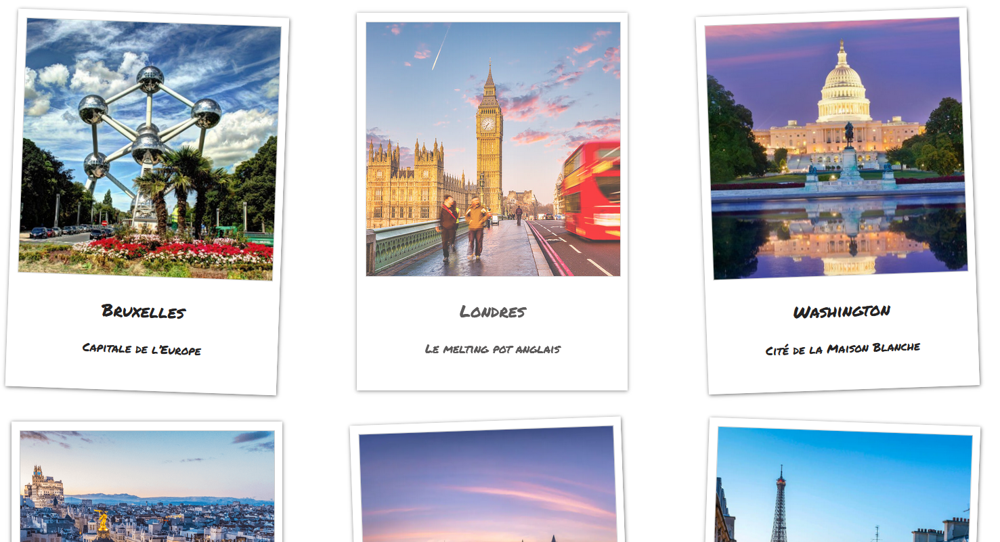
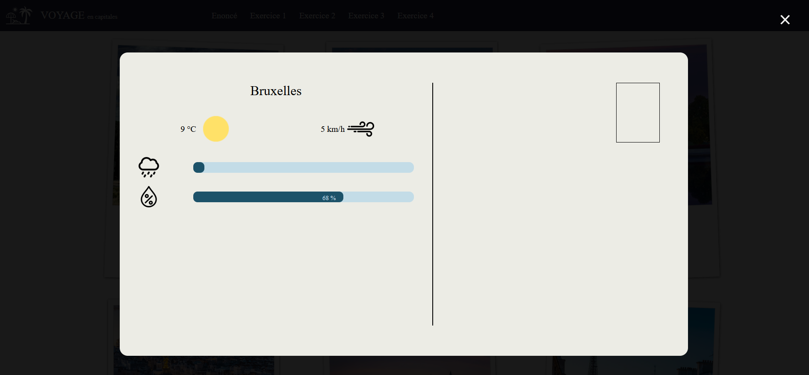
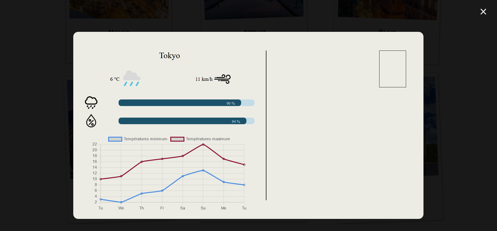

Exercice 1 : Afficher images à partir du JS
A partir du tableau fourni dans le fichier JS exercice1.js, affichez les images sur la page.
S'y vous n'arrivez pas à les afficher en js, faites-le en pur html pour ne pas être bloqués pour la suite.

Exercice 2 : Afficher une modal lors du click sur une image
A partir des informations fournies dans l'objet infoBruxelles, affichez, lors du click sur une image, une modal contenant les informations suivantes :
Quand on clique sur les icones de la précipitation et de l'humidité, la jauge se re-rempli

Exercice 3 : Consommation d'API
Remplacez maintenant les données brutes par un appel vers l'API suivante : API Météo.
Exercice 4 : Librairie
Grâce à la librairie Chart Js, affichez un graphique des températures min et max des jours suivants.
